Out of the Dark Ages? – slides for the Georgia Tech edition
← → build/slide · ↑ ↓ day · B builds off · O overview · N notes · F present
Sam Nunn School of International Affairs · 31 August – 4 September 2026
Out of the Dark Ages?
Supercharging your research workflow with LLMs
Five days · 11:00–13:30 daily · Nunn Conference Room Stephan De Spiegeleire, The Hague Center for Strategic Studies
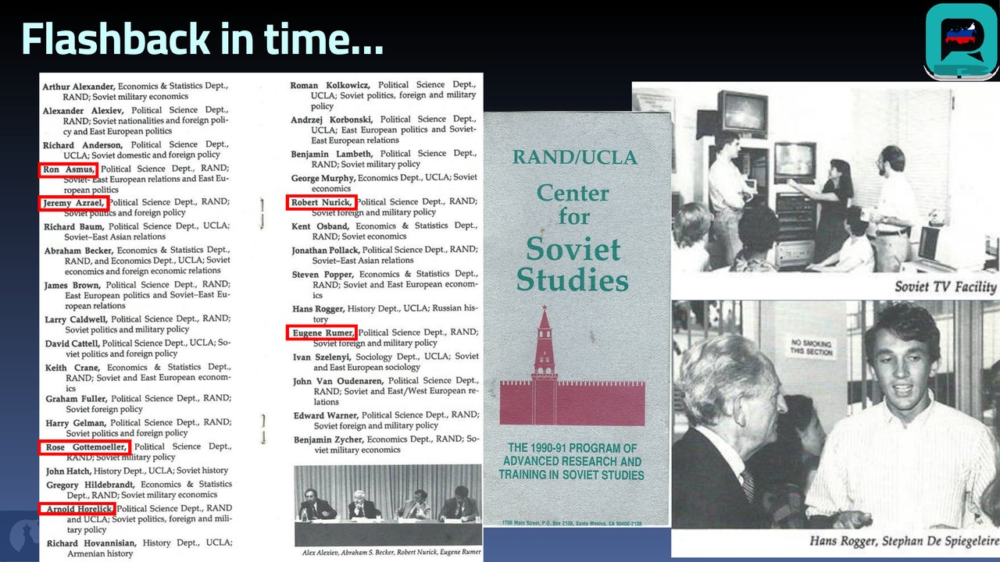
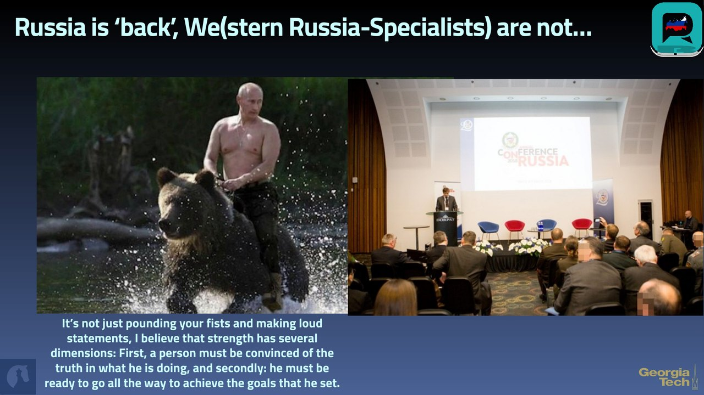
We built it once. Then we stopped.
The competitor came back. The infrastructure did not.
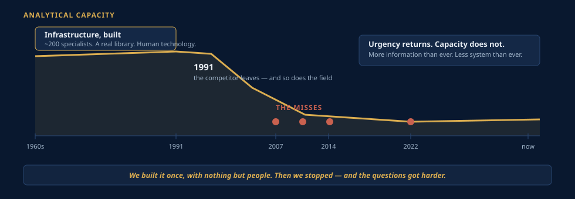
It was done once
About 200 specialists in one place, with a real library and the most advanced technology of the day – which was people.
And our record since
2007. 2008. 2014. 2022. Not obscure calls. The ones the field existed to make.
So you would expect experiment
More urgency, worse record, better instruments than ever – and less systematic work than ever. The incentives point the other way.
To be fair: satellite imagery, Telegram and social media do mean more information is used than before. What is missing is not information. It is system.
The week
One pipeline. Each day owns one stage of it, and each day stands on its own.
Day 1 · Foundations
Why the way we work now does not hold.
Day 2 · Corpora
Finding what you have been missing.
Day 3 · Taxonomies
Building the instrument.
Day 4 · Classification
Applying it at scale, and evaluating it.
Day 5 · Your projects
And the parts of the kit you can take.
Students come and go. Every day is self-contained and opens with a cold start, so arriving on Wednesday costs you nothing.
Day 1 · Monday 31 August
Foundations
How we got here, why it stopped working – and what a field that fixed it looks like
11:00 – 13:30
How this week works
Three ground rules.
Please interrupt
Questions and comments welcome at any time – you may know things I do not, and I want to hear them.
Topics will bleed into the next day
Perfectly fine. The days are not sealed off.
We won't finish everything today – by design
Quality over coverage. Each day stands alone. This is not the five-day program compressed: that one runs 32 hours and builds one pipeline end to end, this one is 12.5 hours and is built so you can walk in on any single afternoon and still leave with something you can use.
Sound familiar?
Which of these is yours?
Have I read enough? What am I missing?
I found 3,000 papers. Now what?
My lit review is 50 pages of summary. Where's the insight?
Everyone cites the same 10 papers. Is that the whole field?
How do I deal with sources in languages I don't read?
My committee wants ‘systematic analysis’ but I'm just… reading?
Traditional research methods were not built for an era of 200 million scholarly articles, multilingual corpora and information overload.
But new tools are.
A salutary side-story.
Not about international affairs. About medicine.
Yesterday: ‘humors’, ‘spirits of the body’, ‘temperaments’
A complete theory of the body. Internally consistent. Entirely wrong.
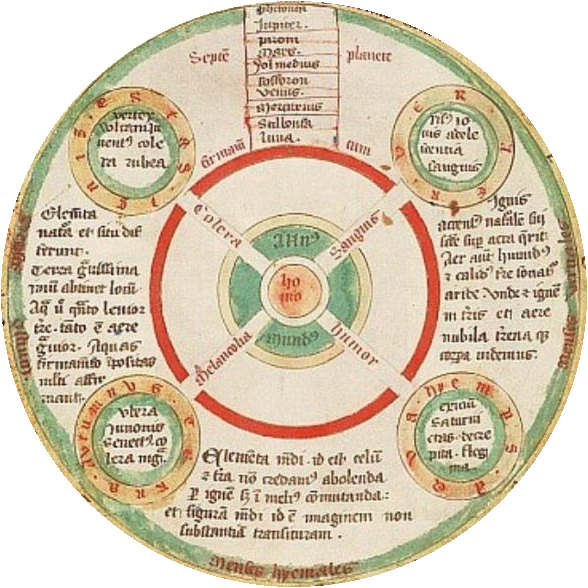
Blood · sanguine
Air, spring, hot and moist. Cheerful, optimistic, energetic.
Yellow bile · choleric
Fire, summer, hot and dry. Ambitious, commanding, quick to anger.
Black bile · melancholic
Earth, autumn, cold and dry. Introspective, thoughtful, depressive.
Phlegm · phlegmatic
Water, winter, cold and moist. Calm, reliable, sluggish.
Four elements, four seasons, four temperaments – and not one measurement.
The ‘omics’
One living system, measured layer by layer – and then put back together.
What the ‘omics’ actually are
A field that systematically measures an entire deep layer of a living system, then integrates the layers.
Genomics · the parts list
Chromosomes, genes, DNA. What the organism could build.
Proteomics · what the parts become
Proteins and the molecular machines they assemble into. What is actually being built.
Cells and communities · the system running
30–40 trillion cells, and the communities they form. Behavior, not parts.
And then: integration
Each layer measured whole, then the layers read together. That integration is what makes it an ‘omics rather than a collection of facts.
genomics : the genome :: geomics : the conflict
We can profile a tumour in a day. We still size up how adversaries portray each other by hunch.
Reading meaning at this scale was impossible before large language models. That is what changed, and it is the only thing that changed. geomics.org
The AlphaFold moment
What happens when a field finally gets its instrument.
The scale
200 million structures against roughly 100,000 from decades of prior research – now in minutes.
Beyond proteins
DNA, RNA and small-molecule interactions, about 50% more accurately.
Real-world impact
Drug discovery, food security, and much besides.
And for us?
Imagine the same leap for global crises and diplomatic behavior. That is what this week is about.
They did the homework. They got a vaccine.
Three habits we have, and one they gave up.
A callous disregard for empirics
Claims travel on plausibility and citation weight. The evidence is illustrative, chosen after the argument.
A callous disregard for recall
We optimise for the sources we found, never for the ones we missed – and we cannot see what we missed.
A callous disregard for systematic reasoning
Nothing is defined, so nothing accumulates. Every study starts the argument again.
What they did instead
Defined the layers. Measured each one whole. Integrated them. It took decades and it was not glamorous work.
And so
They got a vaccine.Where is ours – for war, and for conflict?
Paradigm shifts across disciplines (1/2)
Every neighboring field made the same crossing. Read two rows, then move.
Discipline
Conventional wisdom
New understanding
Key insight
Impact
Medicine
Doctors make treatment decisions based on clinical judgment
Evidence-based medicine guided by data analytics
Medical data volume doubles every 40 months since the 1980s
More personalized treatments
Improved patient outcomes
AI in diagnosis
Economics
Technological automation does not lead to permanent unemployment
AI could substitute for human cognitive capabilities
Potential for widespread job displacement
Focus on AI's impact on labor markets
New policies needed
Rethinking education
Sociology
Social research relies on sampling techniques
Big data allows analysis of entire populations (n = all)
Every neighboring field made the same crossing. Read two rows, then move.
Discipline
Conventional wisdom
New understanding
Key insight
Impact
Environmental science
Material discovery is slow and intuition-based
AI accelerates discovery through data analysis
AI can revolutionize energy storage development
Tools like MatterGen
New electronics materials
More efficient validation
History
Research relies on limited historical records
AI can decipher previously unreadable ancient texts
New sources could change historical understanding
Deciphering ancient scrolls
New historical data
Challenging interpretations
Linguistics
Language analysis relies on predefined rules
Generative AI learns patterns and produces outputs
AI can break down language barriers
Advanced NLP
Automated translation
New language insights
Psychology
Research uses controlled experiments with small samples
Big data enables real-world behavior study
Real-world data provides ecological validity
Memory and emotion insights
Personalized interventions
Redefining concepts
Political science
Campaigns rely on traditional outreach methods
AI analyzes voter data and personalizes messaging
Raises concerns about manipulation and democracy
Voter manipulation concerns
Impact on political discourse
What transfers, and what does not
The analogy is worth the left column. It is worth saying the right column out loud first.
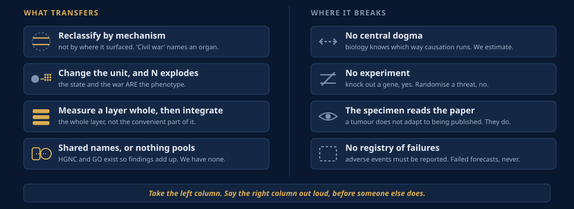
Every neighboring discipline crossed over. Why didn't ours?
Two answers. Neither of them is about the tools.
1 · We never built the instrument
Biology has the Gene Ontology, medicine has SNOMED and ICD. We have no shared, defined vocabulary for what we study – so nothing anyone measures can be compared with anything anyone else measured.
2 · The incentives point the other way
A new framework is publishable; a measurement layer is infrastructure. The work that would have let the field cross over is the work nobody is rewarded for doing.
How do we currently do it?
You tell me.
How search is typically done today
Solitary, poor, nasty, brutish, and short.
In 99.9% of cases it is not explicit
And it is not documented. The references are non-transparent: why those sources and not others? which excerpt exactly? complete citation? alternative readings?
What we lean on instead
Presumably authoritative sources - peer-reviewed, most-cited. Trust me, I know the literature. And herd behavior.
The alternatives that already exist
Bibliometric databases: Scopus, Web of Science, Lens. And, cheating, syllabus site:.edu.
The sophistication of our queries
Measured in our own literature.
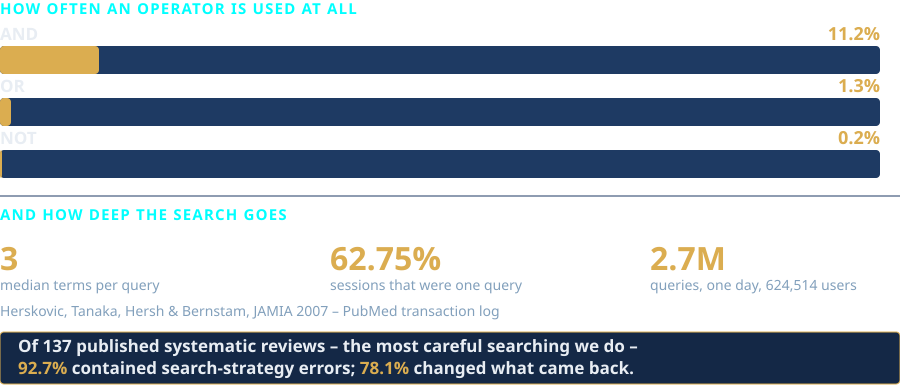
Problems with search today
Three, and only one of them is about the tools.
Access
Paywalls and terms of use. We are unusually fortunate here through RuBase, which is exactly why it is easy to forget how binding this is for everyone else.
Time
Small projects force researchers to the low-hanging fruit: to narrow, risk-averse precision, and to neglect recall.
Search query syntax
Many datasets have decidedly suboptimal search. Nearly all are keyword-based old-school search; not even proximity operators are always implemented.
And we are stuck with that to build the corpus – which we can then play with the way we want, with unsupervised and semi-supervised NLP tools.
Precision and recall
Two numbers. Almost everyone optimises the wrong one.
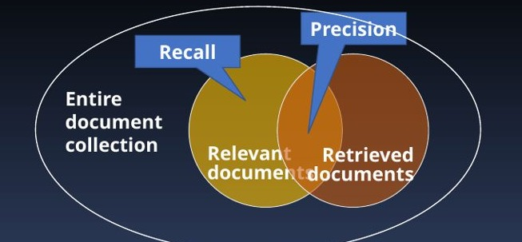
Precision
Of what you retrieved, how much was relevant. Easy to see: you are looking at it.
Recall
Of what was relevant, how much you retrieved. You cannot see what you missed, which is exactly why it goes unmeasured.
The trade-off you are actually making
A narrow query feels rigorous and quietly buys precision with recall. Every AND and every NOT is a bet that what you excluded did not matter.
What would a useful search even look like?
Two questions, then six metrics.
Are we looking for
Good or excellent articles?
And how would we know?
Good knowledge and insight?
And how would we know that?
Metrics of usefulness
Precision and accuracy
Just narrow (influencing / IR / EUR to RUS), or broad (influencing / IR, or even influencing / human)?
Not an anecdote. The numbers are current, and they are getting worse.
The scale
13,000 retractions in 2023 alone. By August 2025 the cumulative record stood at roughly 55,000 retracted papers.
Fake peer review
More than 6,400 retractions across 2024–25 were attributed to fabricated review – the mechanism that is supposed to be the safeguard.
Paper mills
About 2,300 cases, and roughly 20% of health and life-science retractions from 2016–25. Hindawi alone retracted over 8,000 articles.
And now, generated text
2,100 retractions are linked to AI-generated content – flagged by “tortured phrases” and text a model plainly wrote. The volume problem and the trust problem are now the same problem.
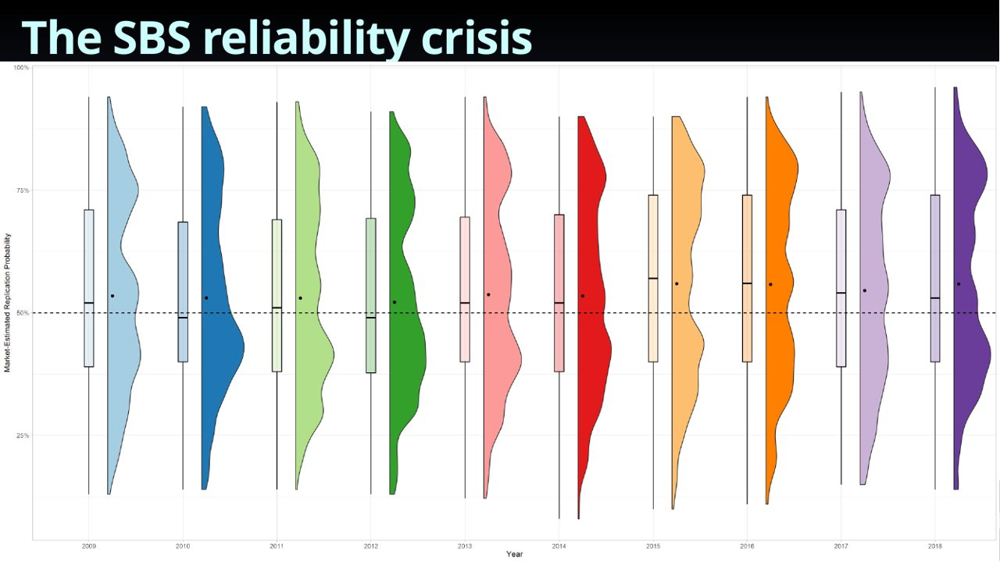
Broad versus narrow.
The aperture decides what your field is allowed to contain.
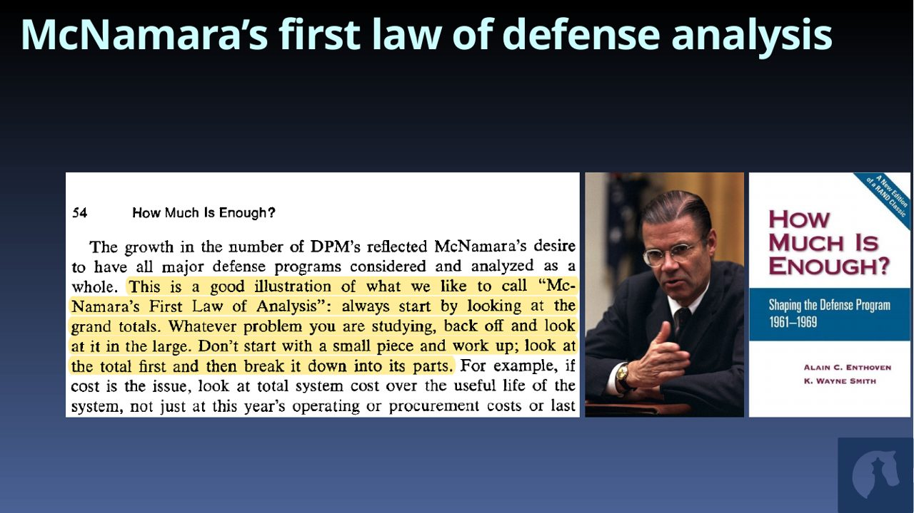
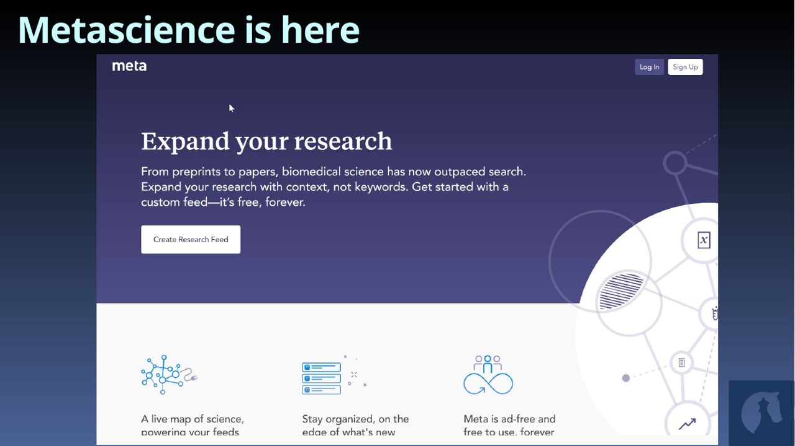
Why at least try broader?
Take any existing research question. Say models of regionalism.
You find the comparative literature
Which may already be doing the work of identifying those models for you.
And you also find the single cases
Studies on one regional organization that were never in the comparative literature – but ask similar questions, or carry an interesting design.
Which leads somewhere
New research questions, and new research designs.
And mainly because now we can. It used to be a daunting prospect. Today we collate large bibliometric and full-text datasets, explore them, and find relevant text spans far more quickly and intelligently. Breaking through the stovepipes, and building more transversal knowledge.
Towards strategic analysis 3.0
From analogue to digital, and then: text is data.
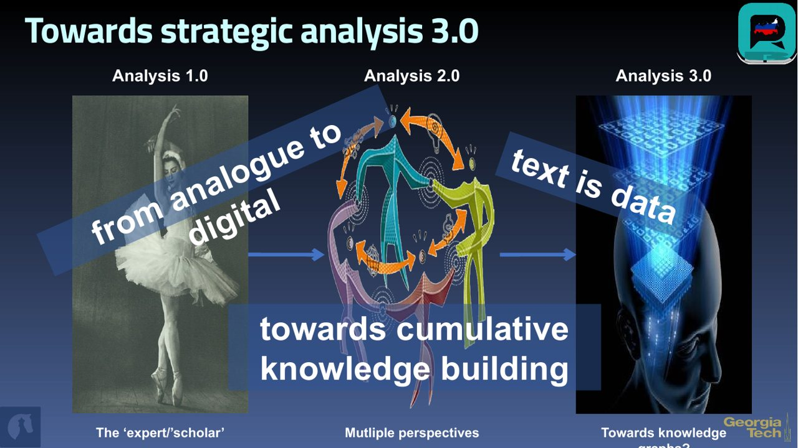
1.0 · the expert
One scholar, deep reading, a judgment you either trust or you do not. Analogue.
2.0 · multiple perspectives
Several experts, structured methods, contending views. Digital, but still bounded by how much a team can read.
3.0 · text is data
The record itself becomes measurable, at a scale no reading team reaches. Toward knowledge graphs.
The point of the arrow
Toward cumulative knowledge-building – each study adding to a structure rather than restarting the argument.
From pub-centric to knowledge-centric
The unit of knowledge is changing under us.
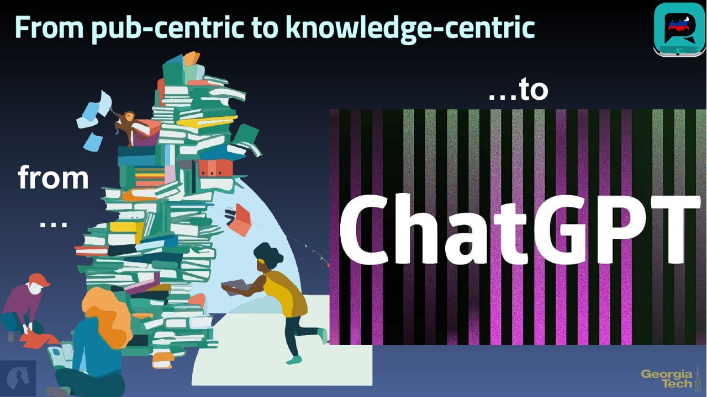
From: the publication
The paper is the atom. To know something you find, read and remember whole documents – and the pile grows faster than anyone can read it.
To: the claim
The atom becomes the individual claim, extractable and comparable across thousands of documents at once.
What that costs you
A claim you cannot trace back to its source is worthless. Everything this week does about provenance exists because of that.
We jump from data straight to insight and decisions, skipping information and knowledge entirely – no shared structure, nothing that accumulates. That short-circuit is the whole problem this week is about.
RuBase – what’s in a name
Ru – Base. Three readings, and the third is the point.
A knowledge base
Somewhere the evidence actually lives, rather than being rediscovered per project.
The base of the DIKW pyramid
The layer our field skips. Data made into information and knowledge, so that insight has something underneath it.
A new foundation
For collaborative, cumulative knowledge-building – work that adds up across people and years instead of restarting.
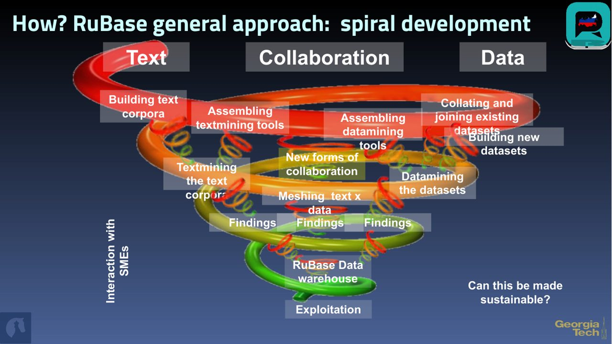
What this has actually produced
Four projects, one method – the one you will use on your own question.
2,500+
WACKO
Official documents against the semantic echoes of 1,000+ Russian philosopher books.
1958–2020
Red Lines
Red lines do not – yet – track Western provocations, or the reverse.
1,400
Gray Horizon
Taxa across 13 dimensions of below-threshold conflict.
1M+
Regeneration
Taxonomically annotated text chunks in one corpus.
Before tomorrow
Write your research question. One sentence.
Bring it tomorrow – Day 2 goes looking for everything that exists on it.
Everything from today and everything coming: one link, live all week.
Day 2 · Tuesday 1 September
Corpora
Finding what you have been missing – and proving that you found it
11:00 – 13:30
The scholarly record on your topic
Ask them to guess the size of their own field first. They will be wrong.
1,000 – 150k
publications per topic
What the scholarly knowledge base on most topics actually holds, in the largest bibliometric databases.
Even the smallest databases
Web of Science, Scopus – typically yield a few hundred publications on a topic.
Which is the problem
A figure far beyond human absorption capability. Not a little beyond. Far beyond.
Two ways to explore the full record
And in both of them, search plays a critical role.
Bibliometrics
Read the shape of the record: who publishes, where, with whom, on what, and when.
LLMs and RAG
Read the content of the record, at a scale no human coding team can match.
257 / 175,010
occurrences of ‘bibliometric’
A quick check in our own quite expansive Russian Foreign, Security and Defense Policy dataset. Fewer than 0.15% of scholarly publications mention it at all.
But in both cases search plays a critical role – and we are not very skilled at it. That is what the rest of today is about.
Where to get the data
The bibliometric databases, and what is wrong with each of them.
Subscription-based
And (very) expensive.
Hard to access
Especially to retrieve in large quantities, which is what you actually need.
Of disappointing quality
Many inconsistencies and omissions even within a single database.
Significantly overlapping
Across databases – so more sources is not the same as more coverage.
And few value-added services
Surprisingly few, given the price.
Scopus · Web of Science · Crossref · Google Scholar · Dimensions · Semantic Scholar · OpenAlex · The Lens · scite_ · findr. The one you can afford is usually the one that decides your corpus.
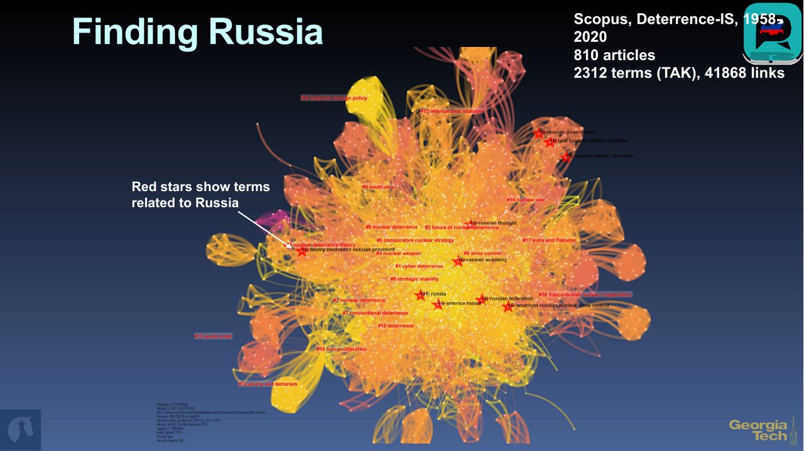
Shaping a search strategy
Six things a defensible strategy contains.
Key concepts
And the meaningful terms that carry them.
Keywords or subject headings
The controlled vocabulary, where the database has one.
Alternative keywords
The synonyms, and the words the other half of the field uses.
Careful linking
Care in linking concepts correctly – this is where most queries quietly break.
Regular evaluation
Of the results, to keep the search focused.
A detailed record
Of the final strategy. You will re-run it at the end of the review to catch what was published while you worked.
Boolean: AND
Narrows. Returns only what carries both.
Must be capitalised
In almost every database. Lower-case and is usually treated as a stop word and silently ignored.
It narrows
Every AND you add can only make the set smaller. That is the point, and it is also the risk.
police AND ethics
Returns only the documents that carry both terms – the overlap, not the union.
Boolean: NOT
Excludes. And it is the operator most likely to cost you a finding.
What it is for
Excluding words when you are getting too many results. In Google and some other databases, the minus sign does the same job.
test NOT drug
Removes everything carrying drug – including the fitness, psychological and background senses you may have wanted.
Why it is dangerous
A NOT term must be domain-FOREIGN. If the noise speaks your own vocabulary, a NOT term removes signal along with it – and you will never see what it removed.
The worked case
Security excluding social security: fine, because the noise is foreign. Deterrence excluding crime: not fine, because criminology is a cousin.
Boolean: OR
Where recall actually comes from.
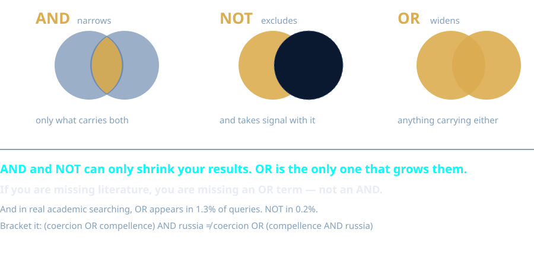
Proximity
AND, but only when the words are near each other. Where the baskets scheme comes from.
What it is for
Two words in the same 40,000-word document usually means nothing. Two words in the same sentence usually means something.
russia NEAR/5 coercion
Within five words of each other. The operator is spelled differently everywhere: NEAR/n, W/n, ADJn, PRE/n.
The scheme you will use
((a NEAR b) NEAR c), where a, b and c are your three baskets. That is how one concept gets widened without widening the others.
Check first, then rely on it
Many databases do not implement proximity at all, and some ignore it silently rather than erroring. Test it on a query whose answer you already know.
Compiling baskets
The project was about Russian (a) international (b) coercion (c).
One basket per conceptual element
A basket of search terms for a, one for b, one for c – so each concept can be widened independently.
The generic scheme
((a near b) near c)
What proximity search does
It looks for documents where any word from basket a appears near any word from basket b, and either of those appears near a word from basket c.
Where the operators go
Proximity operators sit between the words to be searched. Not every database implements them – check before you design around them.
Search is iterative
Four habits. None of them is optional.
Check items from the first few pages
Both the bad-looking and the good-looking ones. The good-looking ones are how you learn the vocabulary.
Try several items from beyond page 100
This is the one nobody does. It is also the only way to find out whether your ranking is hiding anything.
If something looks suspicious, check it
More carefully than feels necessary.
Try another query
A single query is a hypothesis, not a search.
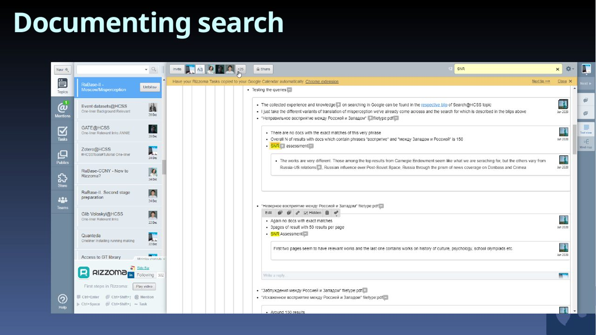
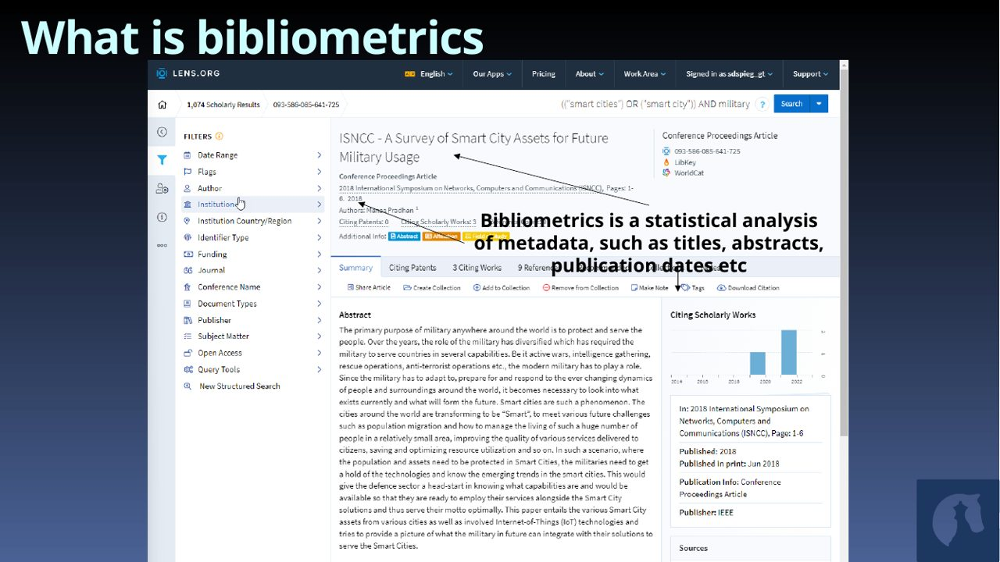
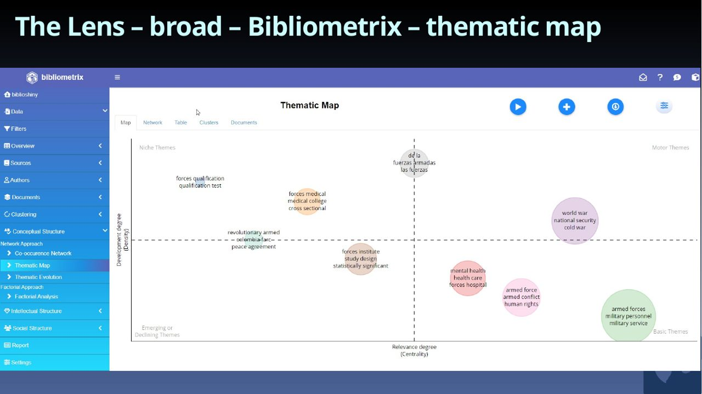
LLMs: pros and cons
From the 2025 edition, and still the right ledger.
Pros
A broader aperture
To contextualise and frame a policy research question.
Rapid summarisation
Quickly digesting large volumes of publications.
Idea generation
Brainstorming policy options, offering counterarguments, simulating dialogues between stakeholders.
Drafting support
Versions of briefs, memos and reports in different styles. And visuals.
Cons
Hallucinations
Text that sounds plausible but is not factually accurate or grounded in reality. This necessitates careful fact-checking.
Bias
Trained on data that may carry societal biases, potentially producing discriminatory or harmful output.
No deep reasoning
Excellent at pattern recognition, but often struggling with true causal understanding or complex analysis.
A workflow for bibliographic RAG
Five steps. The fourth is the one people skip.
1
Define your research question
2
Retrieve
Write a query, or upload the PDFs.
3
Analyze and synthesise
Ask questions against the provided context.
4
Review and validate
Cross-check what the model found against a traditional literature review. This is the step that gets skipped.
5
Document and iterate
Keep a record of your process, for transparency and reproducibility.
Tools for bibliographic RAG
The landscape as of the 2025 edition. It moves; the workflow does not.
Built on OpenAI GPTs
Dimensions Research GPT · Scholar GPT · Scholar AI
Purpose-built for the literature
consensus · scite_ · elicit · scipace
General assistants doing the job
NotebookLM · OpenAI Deep Research · DeepSeek
Open
OpenScholar
Named for orientation, not endorsed. The half-life of this list is months; the workflow on the previous slide is what survives it.
Before tomorrow
Harvest your corpus. Clean it. Count it.
Bring the number. Tomorrow we build the instrument that reads it.
Day 3 · Wednesday 2 September
Taxonomies
Building an instrument, not a filing system
11:00 – 13:30
LLM uptake across academic disciplines.
Recent work. It sets up the punchline on the next slide.
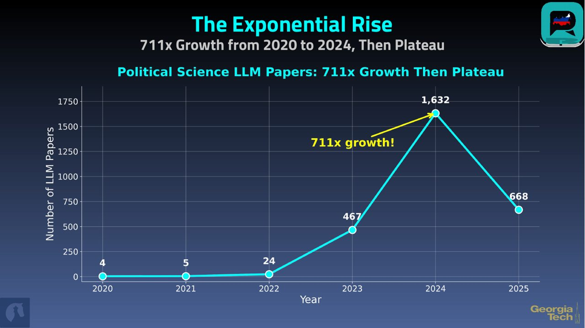
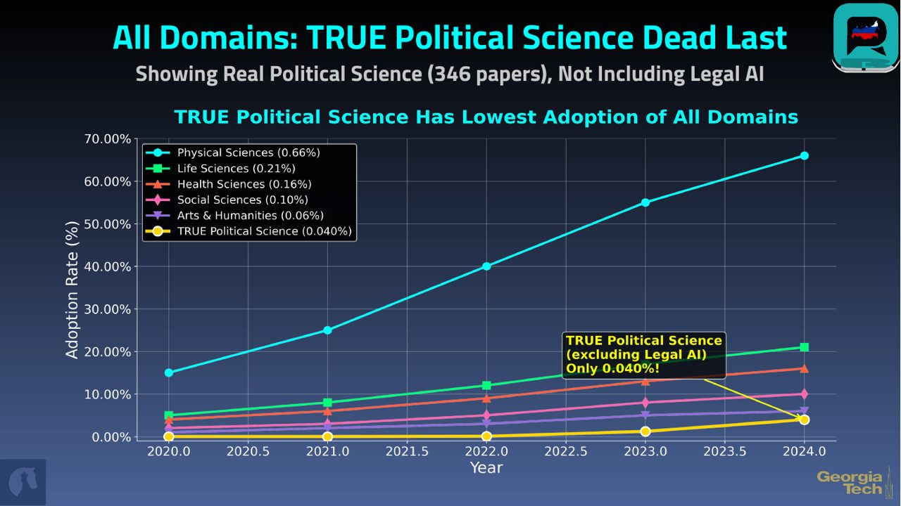
What are ontologies and taxonomies?
Both organize knowledge. They do slightly different jobs.
A taxonomy classifies
Concepts into hierarchical, tree-like structures, grouping related entities under broader categories and defining is-a relationships. A tiger is a mammal.
Like a library classification
Books on physics are grouped together.
An ontology relates
It goes beyond classification by defining relationships between concepts: rules, attributes and connections describing how elements interact. A tiger preys on deer. A tiger's habitat is the jungle.
Like a knowledge graph
Books linked not just by category but by content, themes and authors.
Why they matter for cumulative knowledge
Progress depends on building on previous findings rather than rediscovering them.
Structuring information
A common language for concepts, reducing ambiguity and organizing knowledge systematically.
Facilitating discoverability
Well-classified work can be retrieved and compared efficiently, which reduces duplicated effort.
Enabling interdisciplinary research
Ontologies define connections between fields, so researchers in different disciplines can understand each other's concepts.
Supporting machine learning
Many AI systems rely on structured knowledge representations to interpret data, recognize patterns and generate new hypotheses.
In biology the Gene Ontology keeps gene functions described consistently across species and studies. In astronomy stellar classification standardises how types of star are described. In the social sciences the lack of rigorous taxonomies leaves terms like power and institutions used inconsistently, and studies fragmented.
Patchy scientific uptake
Some fields built the instrument. Ours did not.
Well developed
Biology and medicine
Gene Ontology, SNOMED CT and ICD give research and clinical practice a structured language.
Computer science and AI
Ontologies power knowledge graphs, semantic search and expert systems: the Semantic Web, WordNet.
Linguistics, astronomy and physics
FrameNet and Universal Dependencies; Harvard stellar classification for celestial objects, particles and phenomena.
Underdeveloped
Social sciences
Power, identity and institutions used inconsistently across studies and subfields.
International relations and political science
No rigorous taxonomies for geopolitical strategies, military doctrines or diplomatic norms.
History, humanities, economics
Classification informal and subjective; macroeconomic concepts like inflation expectations lack standard definitions across models.
Why some fields lag: they rely on fluid, interpretive concepts rather than strictly defined categories; standardized datasets are missing, which makes formal classification harder; and IR and political science actively resist rigid taxonomies because their concepts are context-dependent. That last one is an argument, not an excuse.
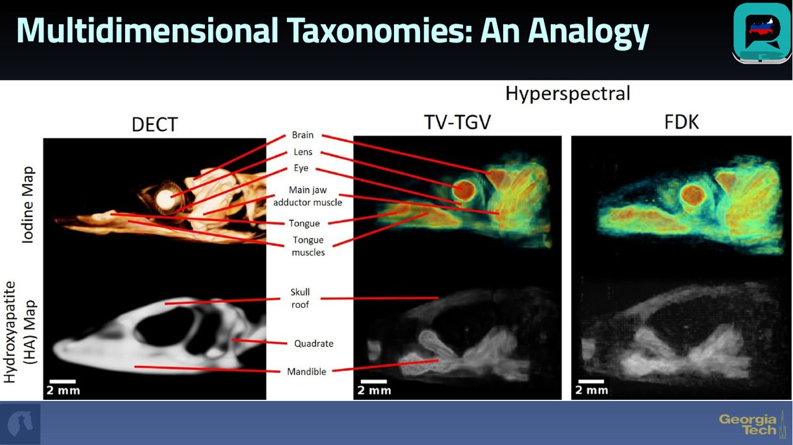
The taxonomy generation prompt
What you are asking for, before you ask for it.
A multi-dimensional taxonomy
A framework for analyzing a complex domain through multiple independent analytical perspectives, each a fundamental way of looking at the subject.
Not the usual thing
Traditional hierarchical taxonomies organize concepts along a single dimension. Complex phenomena live in spaces where several factors operate at once, and independently.
Four levels
HLTP
High-Level Taxonomic Principles: the independent dimensions, the lenses. Temporal, geographical, power application.
Second and third level
Major divisions within each principle, then the specific operational areas within those.
Taxa
The concrete instances that get classified along every dimension.
The MDTDF prompt, componentized
Every element of the working framework document – not a summary written for teaching.
The taxonomy prompt, murderboarded
One prompt, two models generating blind, and an argument between them.
The murderboard
Two models argue over a frozen artifact until both sign off on the identical bytes – or until the disagreement is the finding.
You – the author – cannot be one of the two reviewers – that GO is a self-assessment, and no checker can tell the difference. Naming the arrangement is the requirement.
And how to test the dimensions you get back
Five criteria. A dimension that fails one of them is not a dimension.
Independence
Does this dimension vary independently of the others?
Universality
Can all instances in the domain be classified along it?
Fundamentality
Does it capture something essential, rather than superficial?
Distinctiveness
Does it give a genuinely unique analytical perspective?
Utility
Does it reveal insight, or support practical work?
The method that produces them: define the domain boundaries · brainstorm dimensions from several perspectives · review the literature for existing frameworks · consult domain experts · and ask, from first principles, what fundamentally defines this domain. Independence is the one that fails most often, and Wednesday's hands-on tests exactly that.
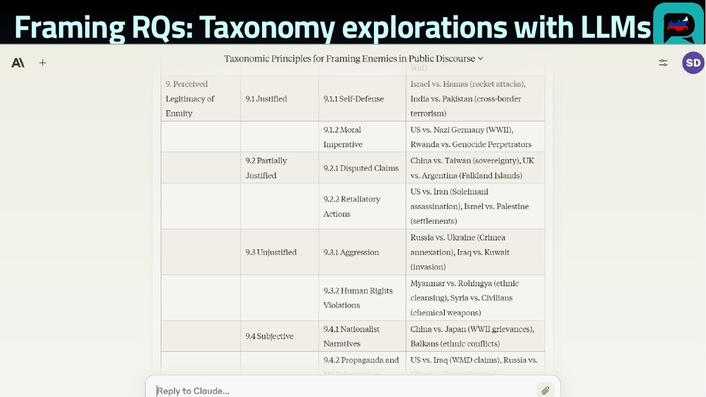
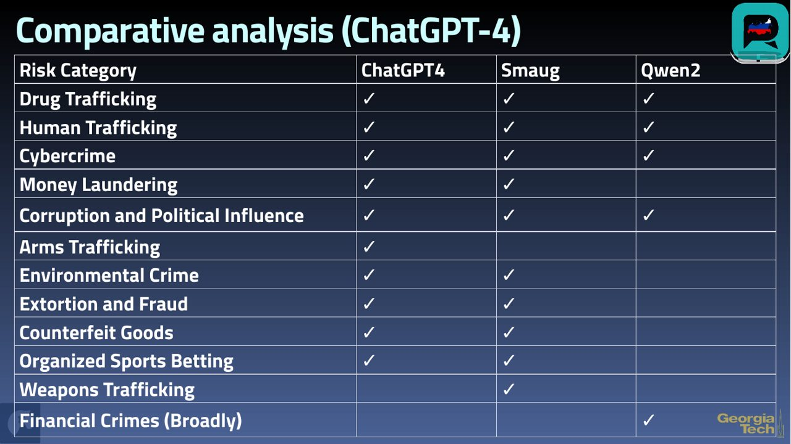
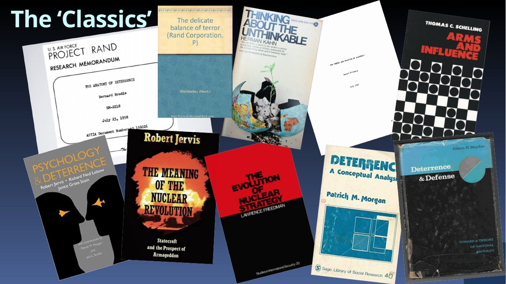
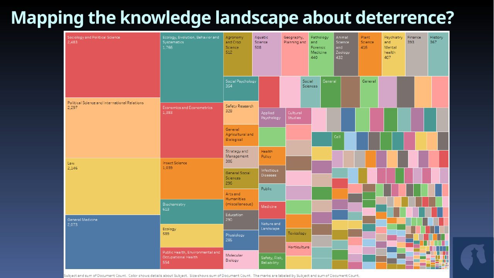
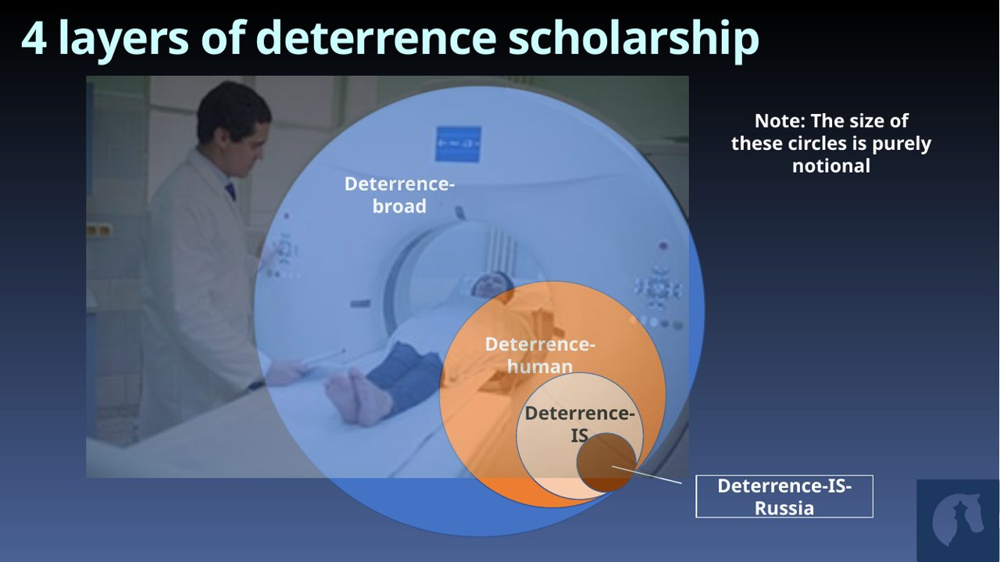
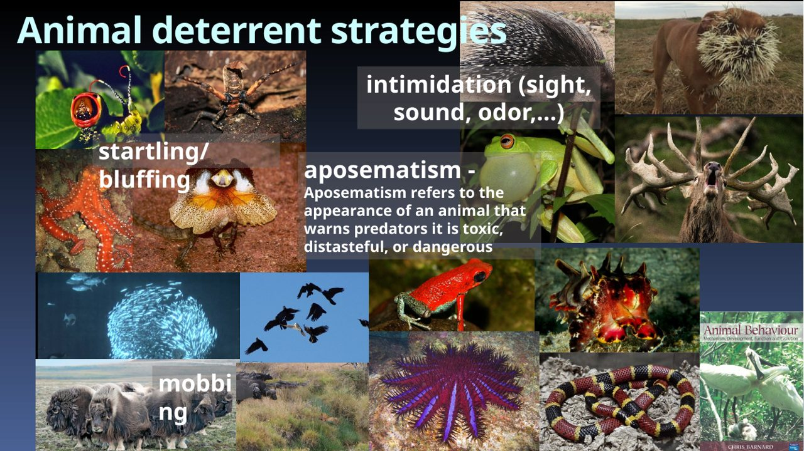
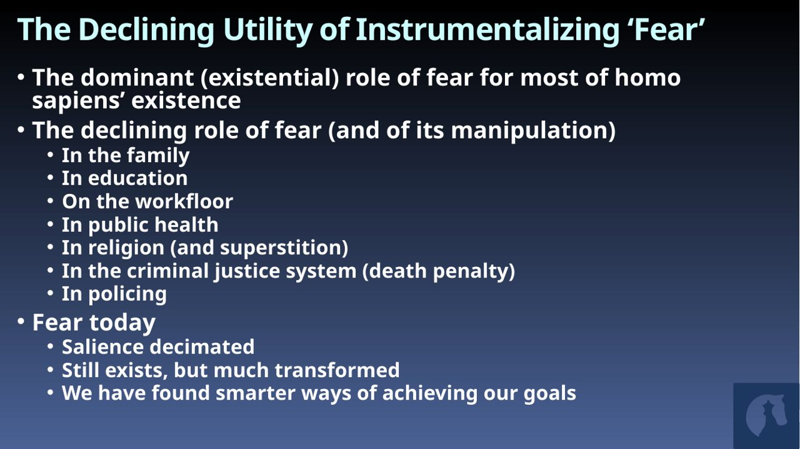
The independence test
A taxonomy is only an instrument if its dimensions are actually independent.
Can a case score high on A and low on B?
If not, A and B are the same dimension wearing two names.
Does every taxon have a plausible negative case?
If nothing could fail to qualify, the taxon measures nothing.
Would a second coder assign the same label?
If not, you have a vocabulary, not a scheme.
Target for your own: 8–12 dimensions, tested for independence, before you classify anything. The prompt that generates one is in Materials – it is the real one we use, with the domain left blank.
What your instrument cannot see
The most transferable idea of the week.
A real filter, from our own work
A statement enters the set only if it carries both a boundary span and a threatened-consequence span.
The consequence
Deliberately deniable coercion is invisible by construction. Two documents sit in the corpus and produced zero hits.
The rejections were correct on the coding scheme. It is not a bug.
An instrument only sees what its definition admits. Write down, today, what yours is built to miss.
Before tomorrow
Extend one branch of your taxonomy to L3.
And write one sentence on what it is built to miss. Tomorrow we run it over your corpus.
Day 4 · Thursday 3 September
Classification
Applying the taxonomy at scale – and being honest about how well it worked
11:00 – 13:30
The assignment prompt
Verbatim from the pipeline. This is the whole of what tells the model what to do.
system_prompt
You are an expert military analyst specializing in assessing
military capabilities and strategic trends in assessing Russian
military regeneration prospects.
Your task is to classify each text chunk according to our
taxonomy that lists various important aspects of Russia's
military regeneration aptitude.
Below is the taxonomy in JSON form for your reference. You must
ONLY use Tier-3 name values present in this taxonomy.
[TAXONOMY START] ... the whole scheme is injected here ...
for each text chunk
• Read the chunk carefully.
• Identify any content that matches the definitions of any
Tier-3 node in the taxonomy exactly.
• Assign a Tier-3 node only if there is direct evidence
or a clear match in the chunk's text to that node's
definition. If unsure, leave it untagged.
• Return an array element with: chunk_id (the index),
tier3_tags (array of Tier-3 node names that apply).
Two lines carry the whole method.Only use names present in this taxonomy stops the model inventing categories; if unsure, leave it untagged is what makes the output honest rather than complete. A model that always answers is a model you cannot measure.
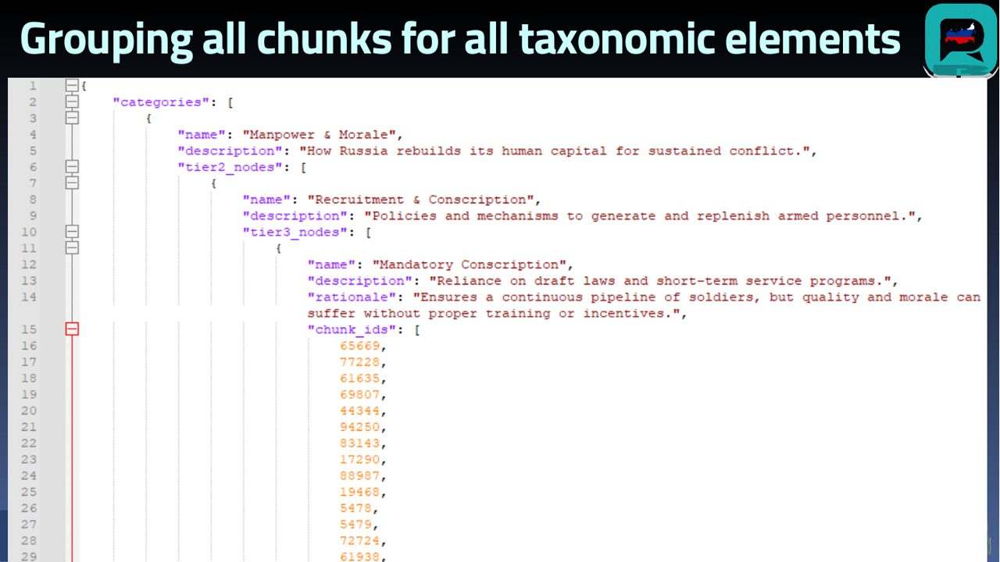
The analysis prompt
Once the chunks are labeled, this is what turns labels into an argument.
You are an expert in military analysis. Your task is to analyze a specific topic,
focusing on its implications for Russian military regeneration capabilities. The analysis
will be conducted using data provided as input, and it should reference the chunk IDs
associated with the specific text used to support each observation.
1
Summary
Key points for this topic, and how they relate to the capacity to regenerate across domains. Explicitly mention strengths and weaknesses. Reference the chunk IDs.
2
Themes
The recurring themes and subtopics – manpower, logistics, equipment, adaptability, industrial capacity, economic resilience. Specific examples with chunk IDs.
3
Evolution
How the discussion changed over time, using months as the primary unit, tied to specific events. Highlight turning points.
4
Author and source differences
Where sources agree, disagree, or are simply silent. Silence is a finding.
Every instruction demands a chunk ID. That is not bureaucracy: it is what makes the write-up auditable, and it is the difference between an analysis you can defend and a summary you have to be trusted on.
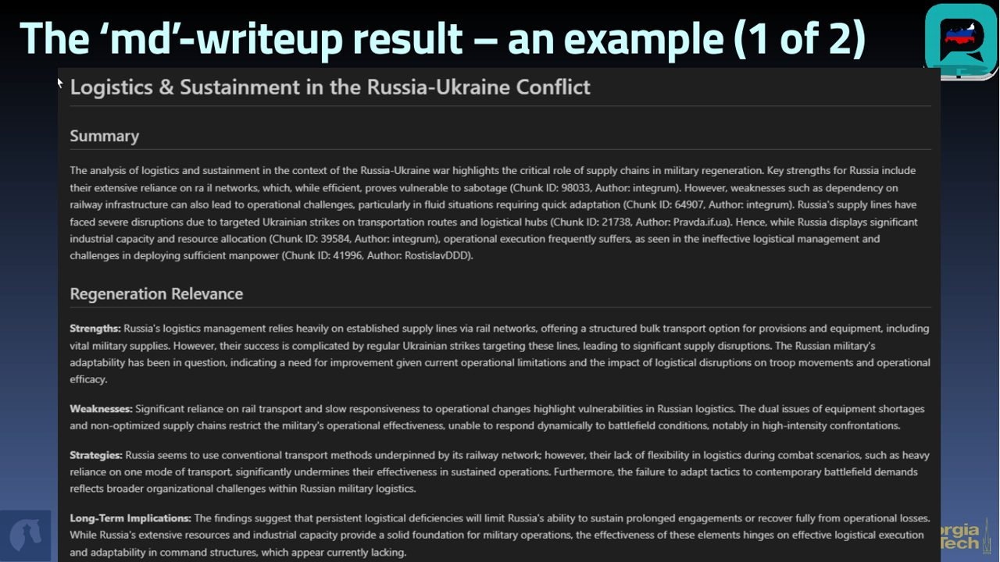
A SWOT analysis of Russian regeneration aptitude
Produced end to end by the pipeline: question, corpus, taxonomy, labels, this.
Self-perceived strengths
Manpower flexibility
A broad pool of conscripts, volunteers and private military companies, read as evidence of an ability to mobilise and field sizeable forces rapidly.
Industrial resilience
Despite technological bottlenecks, official messaging underscores capacity to maintain or increase output in key defense sectors, often on Soviet-era infrastructure.
Doctrinal adaptation
Evolving tactics in hybrid and urban warfare presented as institutional learning: drones, updated artillery practice, novel offensive strategies.
Self-perceived weaknesses
Morale and discipline gaps
Uneven training standards, inconsistent welfare support and mixed-force structures degrading cohesion and battlefield effectiveness.
Logistical fragility
Rail disruption, shortages of advanced components, sabotage threats. Sanctions limit access to modern technology and amplify reliance on Soviet platforms.
Command complexities
Centralised directives coexisting with irregular and regional forces, straining unified command, communication and long-term planning.
Now measure whether it worked
Three checks, in increasing order of discomfort.
Does the quoted span exist?
Make the model quote the text justifying each call, then check mechanically that the quote is really there.
Do two models agree?
One model is an opinion. Disagreement is where your scheme is ambiguous.
Do two humans agree?
Cohen's kappa. This is the number your committee will ask for.
What that measurement found
2.5% – 45.8%
span fabrication
How often the quote justifying a call was not actually in the passage. Preliminary, on our own unvalidated labels.
An eighteen-fold spread – at identical accuracy.
No accuracy leaderboard would ever show you this. It is only visible because we forced the model to point at its evidence and then checked.
Two traps that will cost you a result
Both measured, both expensive.
The router trap
An open-weight model called through a load-balancing router may be served to you quantised, from an arbitrary host. Your benchmark then measures the host, not the model.
The anchoring trap
Show a coder the model's answer and you have not measured agreement – you have measured compliance. Blind coding or nothing.
And the honest framing for your methods section: a single adjudicated pass gives you agreement with your own reference, not accuracy against ground truth. Say so, and you will be believed.
Reading a kappa
Cohen's kappa corrects agreement for the agreement you would get by chance alone.
< 0.40
Poor to fair. Your scheme is ambiguous, not your coders.
0.40 – 0.60
Moderate. Publishable with discussion of where it fails.
0.60 – 0.80
Substantial. This is a realistic target for a first pass.
> 0.80
Almost suspicious. Check that your coders were genuinely independent.
Two coders, one scheme, the same passages, neither seeing the other or the model. Anything else is not a kappa, whatever you call it in the paper.
A real number, from our own pipeline
And what it cost us to learn it.
0.384
auto-draft kappa, red lines
Model-drafted labels, then human review. The neighboring layer scored 0.563 on the same pass. Poor – and it looks fine until you compute it.
The coders were not disagreeing with each other. They were agreeing with the model.
Show a reviewer the machine answer and you measure compliance, not reliability. The fix is expensive and unavoidable: a genuinely blind second pass.
A real confusion matrix
Two human readers, one scheme, the red-line layer. Every cell is ours.
B says yes
B says no
A says yes
34
2
A says no
9
207
252 passages coded by both. Raw agreement 93%.
The disagreement is one-directional: 9 against 2.
That asymmetry is the finding. This is not noise between two careful readers. One of them is systematically more inclusive than the other. A threshold disagreement can be fixed by rewriting a definition. Noise cannot.
The same data. Two answers.
Both are correctly computed. Only one of them means anything.
93%
raw agreement
What the matrix says if you stop reading there.
0.24
Cohen's kappa
On the passages where the second reader actually made an independent call.
Why they diverge
216 of 252 passages are an easy no, agreed without either reader having to think. Chance alone scores about three quarters on a base rate that skewed. Kappa subtracts that floor. Raw agreement pockets it.
The gate we had set for ourselves was 0.70. The honest reading is not that the coders failed: it is that the boundary is genuinely subjective, which is a reportable finding rather than something to bury. Caveat, and say it out loud: n = 34 contested passages, so the interval is wide, and this is expert re-annotation rather than two fully independent coders.
And where the model actually stands
Same passages, same scheme. Measured per layer, not overall.
−0.02
model vs human, red lines
On the contested passages the production model is indistinguishable from chance. Raw agreement 55%.
+0.72
model vs human, nuclear signalling
On the easier layer the same model is substantial. Raw agreement 89%.
So measure per layer
One model, one scheme, one corpus – and it is worthless on one layer and good on the other. A single headline accuracy would have hidden both facts.
Two independent readers and the careful literal machine reads all clustered around 0.65 to 0.72; the inclusive reader sat apart from every one of them. The disagreement axis was not human versus machine.
The number we still do not have
And why we are telling you that instead of quoting one.
Everything on the last three slides is expert re-annotation, not two independent coders.
The same person was second reader and adjudicator, and part of the pass was assisted. That is a legitimate second look. It is not inter-annotator reliability, and calling it that in a paper would be the thing a reviewer catches.
What a clean number needs
Two coders. One scheme. The same passages. Neither seeing the other, nor the model.
Where ours stands
A blind app exists and the passages are drawn. The pass has not come back yet, so we quote no clean kappa at all.
What to report
Six lines. If your methods section has these, it will survive review.
1 · The question
Stated so someone else could ask it again.
2 · The query
Verbatim, with the date you ran it and the database version.
3 · The corpus
N documents, N chunks, sources, languages, and how duplicates were handled.
4 · The scheme
Dimensions, levels, and one worked coding decision.
5 · The reliability
Kappa, how many coders, and whether they were blind.
6 · The blind spot
What your instrument cannot see, in one sentence.
Before tomorrow
Run your classifier over a bigger slice. Report one number honestly.
Tomorrow is yours: your project, and what you can actually take away.
Day 5 · Friday 4 September
Your projects, and the kit
What to take, what to build next, and what is not transferable
11:00 – 13:30
How to represent knowledge
Three reasons the graph formalism is the one that stuck.
A graph formalism
Labeled graphs in the graph-theory sense, where the reasoning mechanisms are graph operations, with graph homomorphism at the core.
Logically founded
Which matters, because logic has been the foundation for knowledge representation and reasoning for millennia.
And it is what industry actually built
It works with the new knowledge graphs, involving some of the world's premier non-state actors: Google, Baidu, the Wikipedia ecosystem, Amazon, Facebook, Yahoo, Yandex.
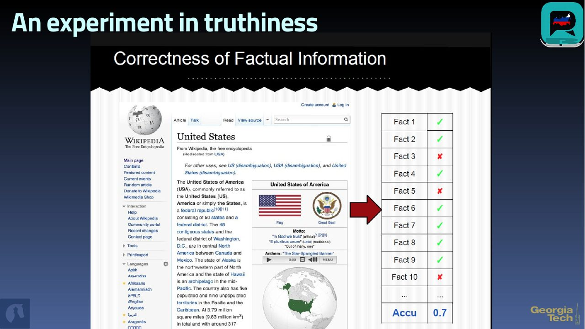
Things, not strings
Companies moved from information retrieval to question answering.
What that shift needs
Some NLP, above all named entity recognition, and good knowledge bases.
DBpedia
An open-source knowledge base in RDF, built from Wikipedia.
Google, as the worked example
2014 Freebase: 1.2 billion facts about 43 million entities. 2015 the Google knowledge graph, updated by text information extraction.
And everyone else has one
Microsoft (Satori), IBM (Watson), Apple, Wolfram (Alpha), Facebook (Open Graph).
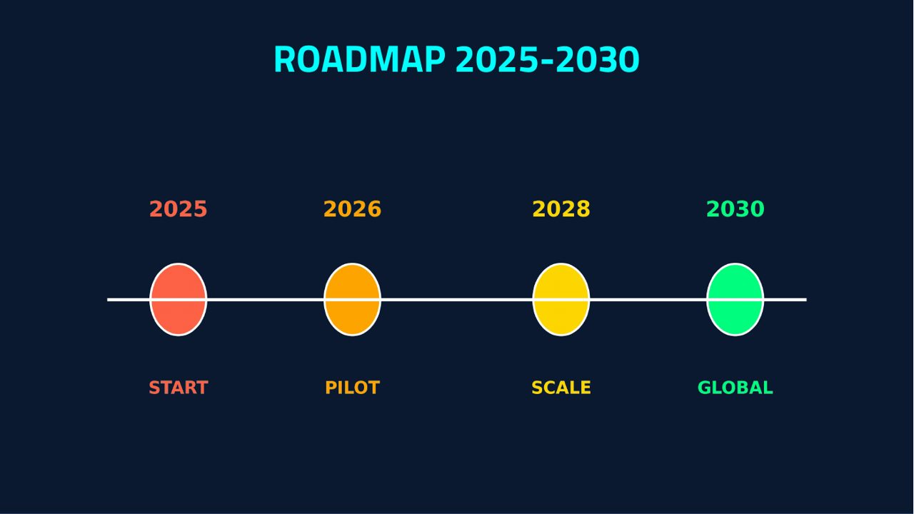
What you can actually take
Being precise about this buys more credibility than overclaiming.
Yours to use
The method. The query discipline. The taxonomy architecture and its independence test. The evaluation habit. The public dashboards and reports.
Ours, and not transferable
Credentialed corpora, licensed sources, the annotation database, and anything that needs our infrastructure to run.
The honest middle
Prompts and pipelines we will share, that will need adapting to your material before they are any use.
Clinics
The rest of today is yours.
Bring what you built
Corpus, taxonomy, classifications – however far you got.
Ten minutes each
One specific recommendation, not general encouragement.
Missing days is fine
Come with the question and we will start from wherever you are.
Your 30-day plan
Four things, in order. Nothing here needs our infrastructure.
Week 1
Freeze your research question and harvest the corpus properly – with dedup.
Week 2
Build the taxonomy to L3 on one branch, and run the independence test.
Week 3
Classify a sample. Measure fabrication and agreement.
Week 4
Write the methods section. Include what your instrument cannot see.
The week, in one slide
What you did, in the order you did it.
Monday
Named a question, and saw why the usual way of answering it does not hold.
Tuesday
Built a corpus, and could say how complete it is.
Wednesday
Built an instrument, and tested whether its dimensions are independent.
Thursday
Ran the instrument over the corpus, and measured how well it worked.
Friday
Turned that into something you can defend.
When it breaks – and it will
The four failures that will actually happen, and what each one means.
The query returns 40,000 hits
Your terms are too broad, or you are missing a NOT. Narrow by domain, never by convenience.
The query returns 11 hits
Almost always a quoting or a field-search error – not a small field.
The model labels everything the same
Your taxon has no plausible negative case. Fix the scheme, not the prompt.
Two coders disagree constantly
Good. That is the scheme telling you where it is ambiguous.
The question is not whether AI will change research methods.
It is whether you will be ahead of the curve or behind it.